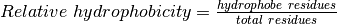

src package¶
Submodules¶
src.pdb module¶
-
src.pdb.generate_membranes_dum()¶
-
src.pdb.write_pdb(pdb_file, plane_normal)¶ Copy the original pdb into a new file and write the coordinates of DUM atoms to visualize the membranes
-
src.pdb.write_pml_script(sphere_point)¶ Write a small PyMol script to visualize the best line
src.protein module¶
-
src.protein.build_prot_dict(pdb_file, accessible_residues)¶ - Get the coordinates of alpha carbones in the PDB
- Check if the residue is accessible to solvant
- Builds a dictionnary compiling infos on:
- 3D coordinates of accessible residues
- value of relative accessibility to solvant
- residue name
- Args:
- pdb_file: The protein’s PDB file accessible_residues: Dictionnary containing the accessible residues and their relative accessibility value
- Returns:
- dict: Residue_id:
- Vector(x, y, z)
- All_atoms_rel_accessibility_value
- Residue_name
Vector: Protein’s center_of_mass
-
src.protein.get_best_line(processed_lines)¶ Finds the line with the highest average hydrophobicity value
Parameters: processed_lines – A list containing lines (dictionaries) with their respective normal vector and values of average hydrophobicity Returns: (plane_normal, average_hydrophobicity) Return type: tuple
-
src.protein.get_com(x, y, z, nb_ca)¶ Calculate the Center Of Mass from a list of coordinates
Parameters: - x – Cumulative sum of C_alpha’s x coordinates
- y – Cumulative sum of C_alpha’s y coordinates
- z – Cumulative sum of C_alpha’s z coordinates
- nb_ca – Number of alpha carbons in the protein
Returns: The center of mass of the protein as Vector(x, y, z)
Return type:
-
src.protein.keep_accessible_residues(naccess_rsa)¶ From the output of naccess we keep only accessible residues which have a all_atoms_rel value > 30 (arbitrary threshold)
Parameters: naccess_rsa – A dictionnary containing the output of naccess’s calculations Returns: Keys are the residue ids and as value their solvant accessible area Return type: dict
-
src.protein.scale_ca_coords(prot_dict, center_of_mass)¶ Place the cartesian system centered in (0, 0, 0) origin
Parameters: prot_dict – Coordinates of all c_alphas of the protein
-
src.protein.slice_relative_hydrophobicity(residues, nb_residues_in_slice)¶ Calculates the relative hydrophobicity of a list of residues
Returns:  Return type: float
src.sphere module¶
-
src.sphere.generate_points_on_sphere(num_points)¶ Generate num_points points evenly distributed on a hemisphere, centered on the center of mass of the protein thanks to the golden angle 3 - sqrt(5).
Parameters: - com_coordinates – Coordinates of the center of mass of the protein
- num_points – Number of desired points on the hemisphere
Returns: A Numpy array of n 3D cartesian coordinates centered on the center of mass of the protein
src.vector module¶
-
class
src.vector.Vector(x=0, y=0, z=0)¶ Bases:
object-
class
Vector¶ -
This class implements 3D vectors (x, y, z) on top of numpy arrays
-
x¶ x coordinate
-
y¶ y coordinate
-
z¶ z coordinate
-
__add__(value)¶ Addition
-
__mul__(value)¶ Multiplication
-
__neg__()¶ Signing
-
__radd__(value)¶ Commutative version of Addition
-
__rmul__(value)¶ Commutative version of Multiplication
-
__rsub__(value)¶ Commutative version of Subtraction
-
__rtruediv__(value)¶ Commutative version of Division
-
__sub__(value)¶ Subtraction
-
__truediv__(value)¶ Division
-
dist_to_plane(normal)¶ Calculates the distance between a 3D point and a plane
Parameters: normal – The normal vector of the plane
-
norm()¶ Calculate the norm (length, magnitude) of a vector
-
x Gives the first element of the vector
-
y Gives the second element of the vector
-
z Gives the third element of the vector
-
class